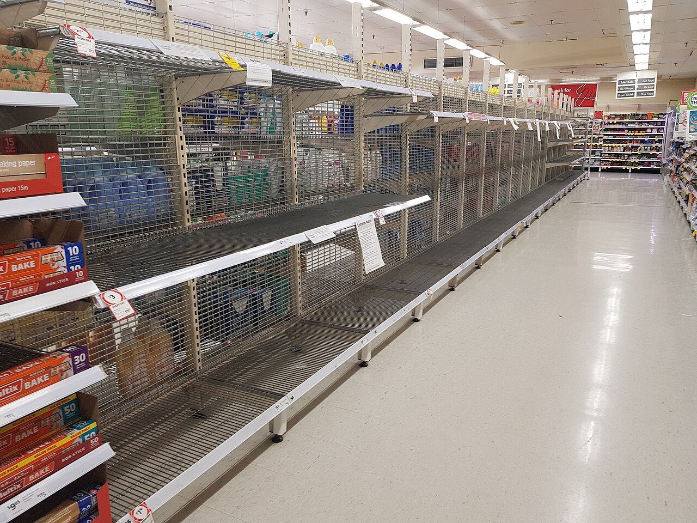

商品全部賣完，為什麼不一定是最好的結果？
缺貨讓人失去原本可以賺到的利潤；剩貨又會吃掉利潤。好的決策不是追求貨架清空，而是理解兩種風險。
小攤商收攤時，貨架空空如也，看起來像是生意興隆。但若商品在下午兩點就賣完，之後還有很多顧客上門，這種「全部售罄」可能意味著一整段沒能實現的收入。反過來說，剩下的商品也不一定就是決策失敗。

先看一個簡化的假設情境：商品進貨成本 60 元，售價 100 元；當天沒賣掉的商品，收攤後只能以 20 元回收。每賣出一件，毛利是 40 元；每剩下一件，扣除回收價後會損失 40 元。
| 當天結果 | 經濟後果 |
|---|---|
| 需求足夠，商品賣出 | 取得 40 元毛利 |
| 需求不足，商品剩下 | 承受 40 元淨損失 |
如果兩種邊際結果對稱，備貨就不應僅憑「希望賣完」或「害怕剩貨」決定，而應理解需求可能落在哪裡。需求不是每天固定的數字；天氣、星期、促銷、附近活動與偶然因素，都可能改變當天銷量。
一、這是個經典的「報童問題」
營運管理以「報童問題」（newsvendor problem）研究這類情境：商品必須在需求真正出現前決定數量，之後又可能面臨剩貨或缺貨。它不只適用於報紙，也能用來理解生鮮、季節商品、活動周邊，或保存期限短的產品。
關鍵在於比較兩種邊際成本。少準備一件、需求卻出現時，會失去多少貢獻利潤或承受多少缺貨成本？多準備一件、最後沒賣掉時，會損失多少？當這兩種成本與需求分布有了合理估計，就能推導更好的備貨量。
在這個高度簡化的例子中，缺貨一件會少賺 40 元，剩貨一件也損失 40 元。在標準模型與連續需求分布等條件下，最適備貨量會對應需求分布的中位數。但現實中成本往往不對稱，可能還有顧客流失、品牌信任、捐贈、報廢費或補貨速度等因素。
這不只是課本習題。哈佛商學院的教學個案 Sport Obermeyer（Janice Hammond 與 Ananth Raman，1994 年 10 月發表，2006 年 8 月修訂）[2]描述一家滑雪服飾公司與它的供應夥伴。這類產品壽命很短、需求不確定，必須在需求揭曉前先決定生產量。個案讓學生分析簡化後的生產規劃問題，也比較在香港與中國兩地生產的取捨。
二、為什麼「售罄率」可能成為壞指標？
如果店長只按售罄率評估員工，員工可能刻意少進貨，讓商品更容易賣完；如果只按營收獎勵，又可能鼓勵過度備貨、折價促銷或忽略剩貨損失。當人們依照一個指標行動，指標本身就會改變行為。
管理上真正要衡量的不是單一數字，而是整體目標：利潤、顧客滿意、供應穩定、報廢率與長期回購之間的取捨。這些目標有時相容，有時衝突，因此必須說明優先順序。
三、資料可以讓決策慢慢變好
最初不需要建立複雜的預測模型。只要持續記錄每天的銷量、缺貨時間、剩貨量、折價與天氣，過一段時間就能檢查需求是否有週期，促銷是否真的有效，以及哪些日子需要不同的備貨策略。
但要留意一個資料陷阱：觀察到的銷量不一定等於真實需求。如果商品在下午就賣完，記錄可能只顯示「今天賣了 50 件」，卻看不出還有多少想買的人沒買到。缺貨會截斷觀察到的需求，因此若只用銷售紀錄預測需求，可能持續低估真正的市場需求。
好的營運決策，不是讓每一天看起來完美，而是讓不確定性下的長期結果更好。
四、從備貨問題看到一種通用思考
類似的取捨也存在於時間管理、雲端資源配置、醫療床位、活動座位與人力排班。準備得太少會錯失機會，準備得太多則會浪費資源。每個案例的成本結構不同，但分析步驟相近：先辨認決策時點、需求的不確定性、兩種錯誤的代價，再問有什麼資料能改善預測。
查證資料來源2 項
實際支持文中事實主張的來源，逐條標註支持的內容；文內如有 [數字] 標記，對應此處編號。
延伸探討1 項資源
供進一步閱讀的資源；未逐條對應文中事實，內容以各來源頁為準。
把故事帶回自己的思考
在你的生活或工作中，有沒有哪一件事總被要求「不要浪費」，卻很少有人計算「準備不足」的成本？如果把兩種代價都列出來，決策會怎麼改變？